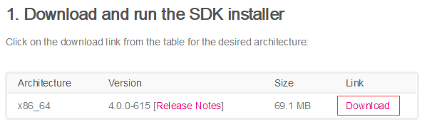
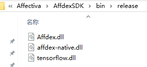

前言
作为一个软件开发者，我们除了要学会复制，黏贴，还要学会调用API和优秀的开源类库。
也许，有人说C#做不了人工智能，如果你相信了，那只能说明你的思想还是狭隘的。
做不了人工智能的不是C#这种语言，而是你，我这种普通的程序员。
做人工智能需要一定的学历背景，一定的数学基础和公司专项的资源供给；而这种机缘小之又小，你我既然是普通的程序员，就必然与此无缘。
但在人工智能如日中天的当下，接触深度学习是必然会发生的事情，所以我们要做的就是，学会调用相关的类库。
现在，让我们迈出C#学习人工智能的第一步，通过调用Affdex来锁定图片中人物的面部，然后将其截取出来。
准备工作
首先，我们需要先访问官网下载Affdex的Sdk。
在官网找中找到下载Affdex的Sdk的地方也是个挺困难的事。。。所以下载链接如下：
进入网页后，向下拉动滚动条，找到到下图所示位置，点击Download进行下载。

下载完成后得到Sdk，如下图：
下面，我们双击进行安装，不过安装SDK有一些限制，需要预先安装NET Framework4.0和C++ 2015。如果电脑里已经安装了，就不必担心了；如果安装的是C++2015-2017这类型的，则需要卸载了，重新安装C++2015的版本，否则Affdex的SDK将安装失败。
安装完成后，我们去安装目录找到Affdex.dll，affdex-native.dll，tensorflow.dll三个文件，如下图：

我们先将它们复制出来，等待使用。
简单的介绍一下，这三个类库中，Affdex.dll是可以被C#项目直接引用的，而另外两个文件是Affdex.dll的依赖文件；也就是说，affdex-native.dll，tensorflow.dll需要在生成时，输出到运行目录下。
有经验的朋友想必已经发现了，这里有个类库名叫tensorflow.dll，tensorflow是什么啊？稍微百度一下大家就会了解了，它是专门来做深度学习的。
也就是说Affdex是支持深度学习的。
----------------------------------------------------------------------------------------------------
现在我们来学习Affdex的使用。
首先我们新建一个WPF项目，然后引用Affdex.dll。
然后将项目的运行平台设置为64位，因为，这样处理图片的速度能快一点，如下图：
在Affdex中我们可以发现四个探头—VideoDetector，PhotoDetector，FrameDetector，CameraDetector。
在这里我们要处理的是图片，所以我们选择PhotoDetector，下面我们创建一个PhotoWindow.Xaml页面来使用PhotoDetector处理图片。
代码实现
首先，我们定义一个PhotoDetector的属性，用于处理图片。
然后我们在构造函数中对他进行实例化，代码如下：
private Affdex.PhotoDetector Detector { get; set; }
public PhotoWindow()
{
InitializeComponent();
uint maxNumFaces = 1;//最多识别图片中几张脸
Detector = new Affdex.PhotoDetector(maxNumFaces, Affdex.FaceDetectorMode.SMALL_FACES);
Detector.setImageListener(this);
Detector.setProcessStatusListener(this);
Detector.start();
}
在上述代码中可以看到，除了初始化PhotoDetector，我们还做了一个图片监听设置setImageListener，那么图片监听是干什么的呢？
很简单，图片被PhotoDetector处理完，我们需要知道图片处理结果呀，而这个图片监听正是是用来返回图片处理结果的。
可以看到图片监听设置的入参是this，也就是说，需要把图片的处理结果返回给当前页面。
如果就这样写是会编译报错的，会提示setImageListener的入参错误。
我们查看setImageListener的入参，发现它的入参是一个ImageListener接口，即，setImageListener的入参是一个要实现了ImageListener接口的类。
到这里，我们就都明白了，现在我们让当前PhotoWindow.xaml窗体继承接口ImageListener，并实现接口ImageListener内的方法。
public partial class PhotoWindow : Window, Affdex.ImageListener
===========================================================================
public void onImageCapture(Affdex.Frame frame)
{
}
public void onImageResults(Dictionary<int, Face> faces, Affdex.Frame frame)
{
}
如上述代码所示，在我们实现的接口onImageResults里有两个参数：faces、frame。
其中faces是最重要的，这里包含Affdex分析图片的结果。
----------------------------------------------------------------------------------------------------
现在，Affdex的配置代码已经写完了，我们可以把图片读取出来调用Affdex处理了。
public PhotoWindow()
{
InitializeComponent();
uint maxNumFaces = 1;//最多识别图片中几张脸
Detector = new Affdex.PhotoDetector(maxNumFaces, Affdex.FaceDetectorMode.SMALL_FACES);
Detector.setImageListener(this);
Detector.start();
byte[] bytes = FileHelper.FileToBytes(System.IO.Path.Combine(System.AppDomain.CurrentDomain.BaseDirectory, "timg.jpg"));
BitmapSource bitmapSource = ImageHelper.BytesToBitmapImage(bytes);
var w = bitmapSource.Width;
var h = bitmapSource.Height;
var stride = bitmapSource.Format.BitsPerPixel * (int)w / 8; //计算Stride
byte[] byteList = new byte[(int)h * stride];
bitmapSource.CopyPixels(byteList, stride, 0);
Affdex.Frame frame = new Affdex.Frame((int)w, (int)h, byteList, Affdex.Frame.COLOR_FORMAT.BGRA);
Detector.process(frame);
}
如上述代码所示，我们在启动了Detector后，读取了一个人物图片，然后把人物图片的像素数组解析出来，生成一个Frame；这个Frame是Affdex的类，用于保存图像数据信息。
最后，我们把生成的Frame对象，扔给Detecotor的Process方法处理。
Detecotor处理完成后，会触发onImageResults方法。
在onImageResults方法里，入参faces包含了处理结果。
现在我们使用faces里的内容，来定位图片中人物面部的位置。
public void onImageResults(Dictionary<int, Face> faces, Affdex.Frame frame)
{
Face face = null;
if (faces != null && faces.Values != null && faces.Values.Count() > 0)
{
face = faces.Values.First();//因为我们的Detector只识别了一个脸，所以这里最多只有一个数据
}
int top = (int)face.FeaturePoints.Min(r => r.X);
int left = (int)face.FeaturePoints.Min(r => r.Y);
int bottom = (int)face.FeaturePoints.Max(r => r.X);
int right = (int)face.FeaturePoints.Max(r => r.Y);
ImageHelper.cutPicture(System.IO.Path.Combine(System.AppDomain.CurrentDomain.BaseDirectory, "timg.jpg"),
left, top, right , bottom - top);
}
如上述代码所示，我们在onImageResults里做了【最简单】人物面部坐标定位，并进行了剪切。
处理结果如下图所示：
结语
事实上，上面介绍的只是Affdex最基础调用，而且，这里并没有使用到深度学习的内容，只是简单的扫描和分析。
想要使用深度学习的内容还需要进一步学习该开源控件，不过，万事开头难，我们现在已经迈出了第一步。
----------------------------------------------------------------------------------------------------
到此C#开发学习人工智能的第一步就完成了。
代码已经传到Github上了，欢迎大家下载。
Github地址：https://github.com/kiba518/WpfAffdex
----------------------------------------------------------------------------------------------------
注：此文章为原创，任何形式的转载都请联系作者获得授权并注明出处！
若您觉得这篇文章还不错，请点击下方的【推荐】，非常感谢！
本文已独家授权给脚本之家（ID:jb51net）公众号发布！
https://www.cnblogs.com/kiba/p/11416919.html